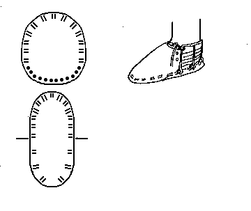

"Iceman"'s Shoe
Found in the Alps in 1991, this shoe uses untanned hide for the vamp and sole. They are laced together with a rawhide strip. The quarters are made from laced twine. When found the shoe had been stuffed with grass to protect the feet.
These shoes are discussed in Barfield and Spindler.
Return to
[Index]
Footwear of the Middle Ages - Historical Shoe Designs/Number 48, by I. Marc Carlson. Copyright 1996
This page is given for the free exchange of information, provided the Author's Name is included in all future revisions, and no money change hands, other than as expressed in the Copyright Page.